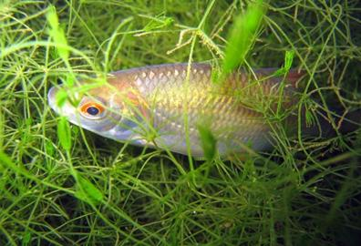
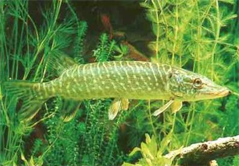

Otto and Sylvia are classmates and dedicated fishers. They use to go fishing once or twice a week in a lake close to their village. The lake is a biotope for a number of fish species. Some of them are predators, like pikes, some other fish are species of prey, like roaches. Sylvia realized that in the last month there were more roaches than pikes in the fish they caught, but this month they have caught more pikes than roaches. According to Otto, this is quite a peculiar finding. In the biology course, at school, they were taught that the trophic levels in an ecosystem can be represented by an ecological pyramid of numbers, biomass, or energy, where each subsequent layer decreases in size as one moves from the bottom to the top of the pyramid. Based on this knowledge, Otto and Sylvia expected that pikes, which are predator species, should be less in number as compared to roaches, which are prey species. Otto and Sylvia are in front of a paradox situation. Provided that the fish they have caught are representative of the population sizes of roaches and pikes in the lake, this month the two species were represented by a reverse order of abundance, namely, pikes were more abundant than roaches. Could it be that there is some variation in the catches of fish of local fishermen, which could explain the differences in population sizes? Could it be that fishermen themselves might attempt to enrich the lake with fish stock so that they can maintain their fisheries in the long run? They discussed their observation with local fishermen who replied that differences in population sizes like the one found by Sylvia and Otto are quite common. Fishermen were also quite confident that the lake was self-sufficient in terms of the abundance of roaches and pikes, so they did not need to intervene in the local aquatic ecosystem in any way. How can Otto and Sylvia explain their finding?
Please note the basic concepts concerning the relationship between trophic levels, aquatic ecosystems, and prey-predator interactions, which were included in the story you have just read. You can find the definitions of all underlined terms in the glossary.
Figure 1. Common roach (Rutilus rutilus) source: http://en.wikipedia.org/wiki/File:Blausteinsee_Tierwelt_03.jpg
Figure 2. Northern pike (Esox lucius) source: http://en.wikipedia.org/wiki/File:Hecht.jpg